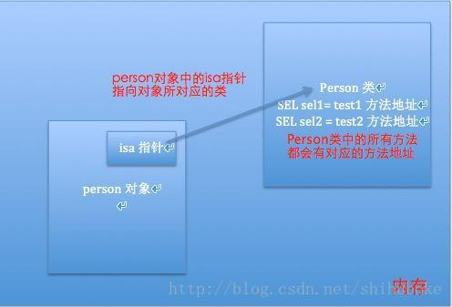

1.SEL类型是OC中用来定义方法的关键字，和其他语言不同的是SEL类型虽然是方法定义，但却不从属于任何类实例，其值是通过@selector进行计算，可以把它当做一个函数指针来使用，当然它实际上并不是一个函数指针，而是const char*。
2.SEL类型可以在编译时通过@selector()直接创建，也可以用NSSelectorFromString()函数创建，这个函数允许你通过名字调用方法。
例如：
[object performSelector:@selector(doSomething)]];
它和如下代码等价：[object doSomething];
3.各种语言都有传递函数的方法:C语言使用函数指针，C++中有函数引用，OC使用选择器selector和block。
@interface Person：NSObject
+(void)test1；
-(void)test2;
@end
Person *person = [[Person alloc]init];
在内存中如下： 
2.在内存中每个类的方法都存储在类对象中，
每个方法都有一个与之对应的SEL类型的数据，
根据一个SEL数据就可以找到对应的方法地址，进而调用方法。
SEL类型的定义：typedef struct objc_selector *SEL.
*************************
SEL对象的创建
SEL s1 = @selector（test1）；
SEL s2 = NSSelectorFromString（@“test1”）
注意:SEL就是对方法的一种包装。